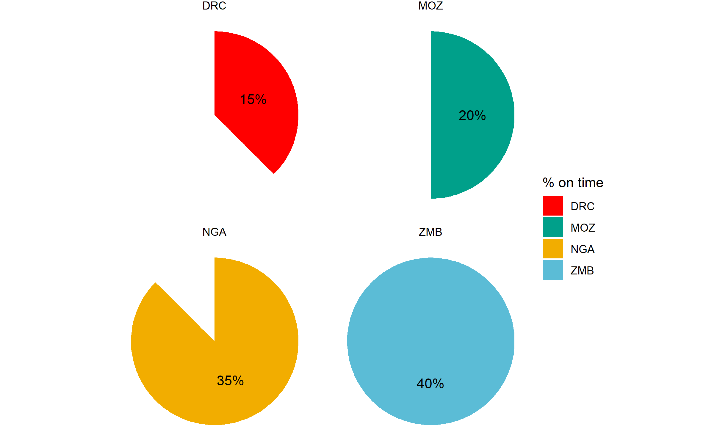
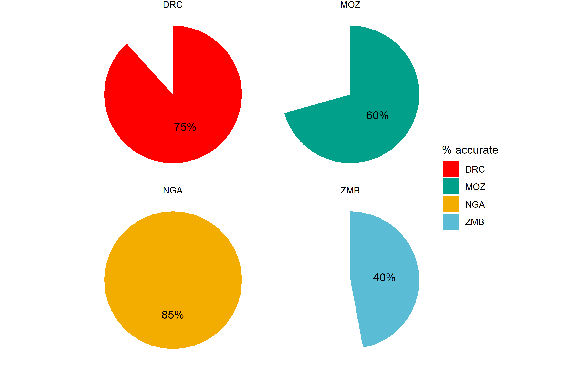
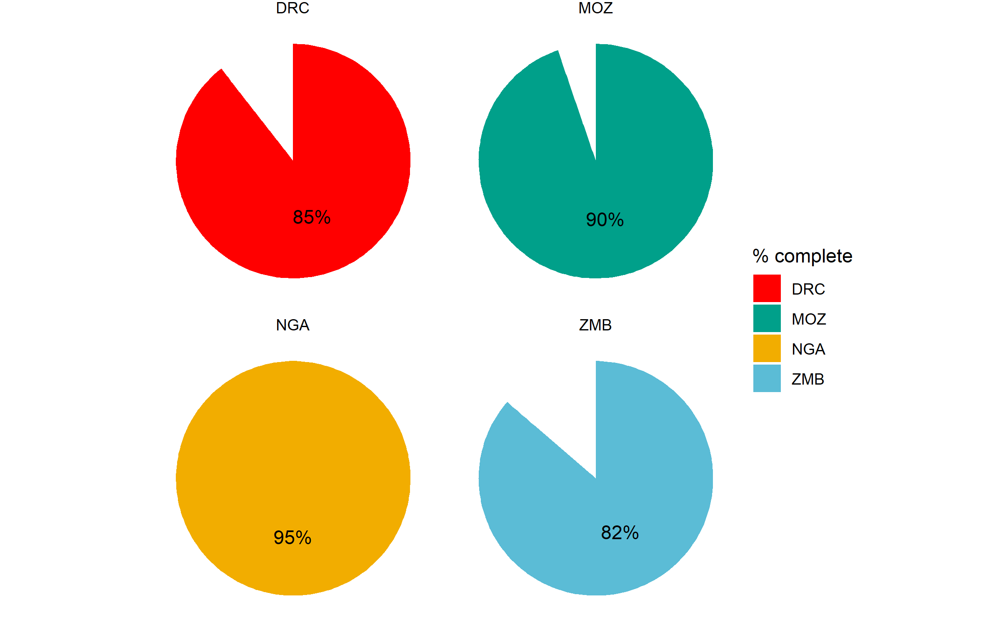

ALL DATA DEPICTED IN THIS DASHBOARD ARE ENTIRELY FICTITIOUS. ANY SIMILARITY TO ACTUAL DATA IS PURELY COINCIDENTAL.
RHCC1 - Under-5 Mortality per 1,000 Live Births
RHCC2 - % of Malaria Cases Managed in the Community
RHCC2 - % of Pneumonia Cases Managed in the Community
RHCC2 - % of Diarrhoea Cases Managed in the Community
RHCC3 - # of CHWS Trained in iCCM
RHCC4 - # of CHWs Equipped According to National Guidelines
RHCC5 - # of Clinical CHWs Trained and Deployed for iCCM per 1,000 children under-five in RHCC areas
RHCC5 - # of Clinical CHWs Trained and Deployed for iCCM
RHCC6 - # of CHW Supervisors Trained
RHCC7 - % of CHWs Who Received At Least One Supervisory Contact in the Prior Month
RHCC8 - % of CHWs Who Correctly Count Respiratory Rate to Diagnose ARI
RHCC9 - % of Sick Child Cases Recommended for Referral by CHW
RHCC9.1 - % of Sick Children Referred by CHWs Who are Received at Referral Facility
RHCC10 - % of CHWs Trained in iCCM Who Are Providing iCCM 1 Year After Initial Training
RHCC11 - % of iCCM Sites/Outreach Posts with No Stock-outs of Key Malaria Medicines and Diagnostics in the Past Month
RHCC11 - % of iCCM Sites/Outreach Posts with No Stock-outs of Key Pneumonia Medicines and Diagnostics in the Past Month
RHCC11 - % of iCCM Sites/Outreach Posts with No Stock-outs of Key Diarrhoea Medicines and Diagnostics in the Past Month
RHCC12 - % of CHWs Who Had No Stock-outs of Malaria Commodities During the Reporting Period
RHCC12 - % of CHWs Who Had No Stock-outs of Pneumonia Commodities During the Reporting Period
RHCC12 - % of CHWs Who Had No Stock-outs of Diarrhoea Commodities During the Reporting Period
RHCC13 - % of Reports Submitted on Time
RHCC14 - % of Accurate Reports Submitted
RHCC15 - % of Complete Reports Submitted
Caregivers of children under-5 were surveyed at baseline and endline to ascertain their knowledge of iCCM services, the location of their CHW, and warning signs of childhood illnesses that necessitate immediate medical attention.
RHCC16 - % of Caregivers Aware of iCCM Services
RHCC17 - % of Caregivers Who Know the Location of Their CHW
RHCC18 - % of Caregivers Who Know Two or More Signs of Childhood Illness That Require Immediate Assessment and, if Appropriate, Treatment
| KPI | Description | Disaggregation |
|---|---|---|
| RHCC1 | Under-five mortality rate in RHCC project areas | |
| RHCC2 | % of cases managed at community level | |
| RHCC3 | # of CHWs trained | |
| RHCC4 | # of trained CHWs equipped according to national guidelines | |
| RHCC5 | # of CHWs trained and deployed for iCCM per 1,000 children under-five in RHCC areas | |
| RHCC6 | # of CHW supervisors trained | |
| RHCC7 | % of CHWs who received at least one supervisory contact in the prior month (where registers were reviewed) | |
| RHCC8 | % of CHWs who correctly count respiratory rate to diagnose ARI | |
| RHCC9 | % of sick child cases recommended for referral by CHW | |
| RHCC9.1 | % of sick children referred by CHWs who are received at referral facility | |
| RHCC10 | % of CHWs trained in iCCM who are providing iCCM 1 year after initial training | |
| RHCC11 | % of iCCM sites/outreach posts with no stock-outs of key iCCM medicines and diagnostics in the past month | disease |
| RHCC12 | % of CHWs who had no stock-outs of commodities during the reporting period | disease |
| RHCC13 | % of reports submitted on time | |
| RHCC14 | % of accurate reports submitted | |
| RHCC15 | % of complete reports submitted | |
| RHCC16 | % of community members aware of iCCM services | |
| RHCC17 | % of community members who know the location of their CHW | |
| RHCC18 | % of caregivers who know two or more signs of childhood illness that require immediate assessment and, if appropriate, treatment |